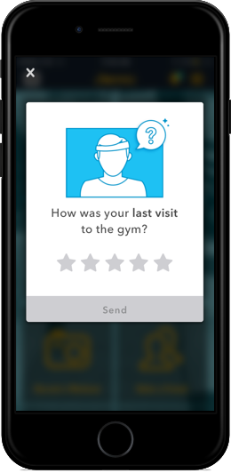
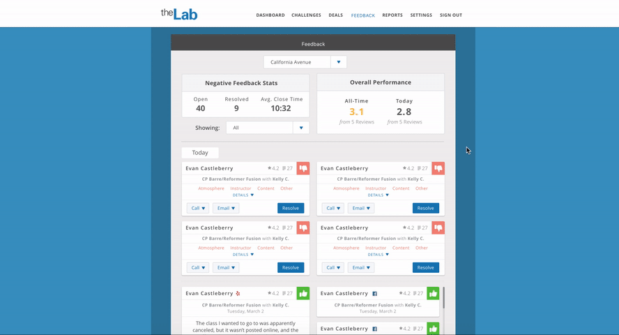
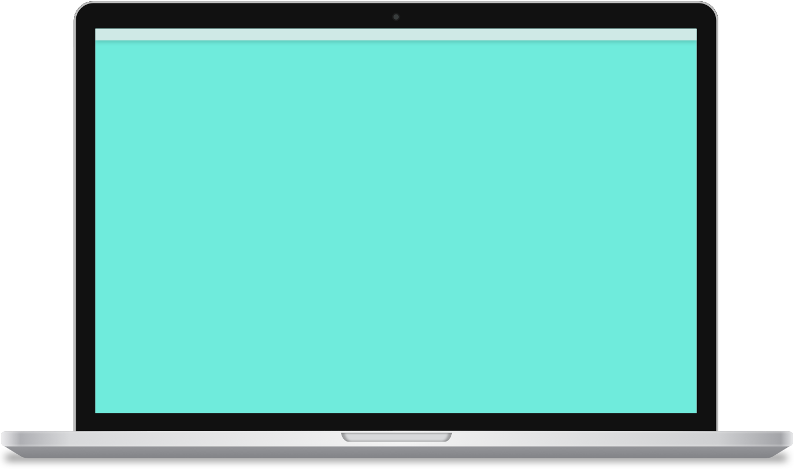
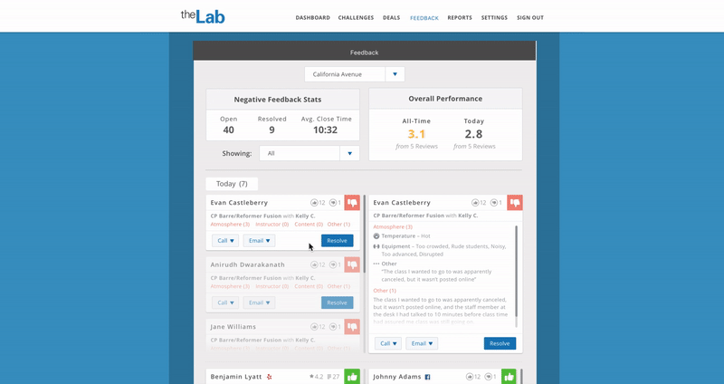
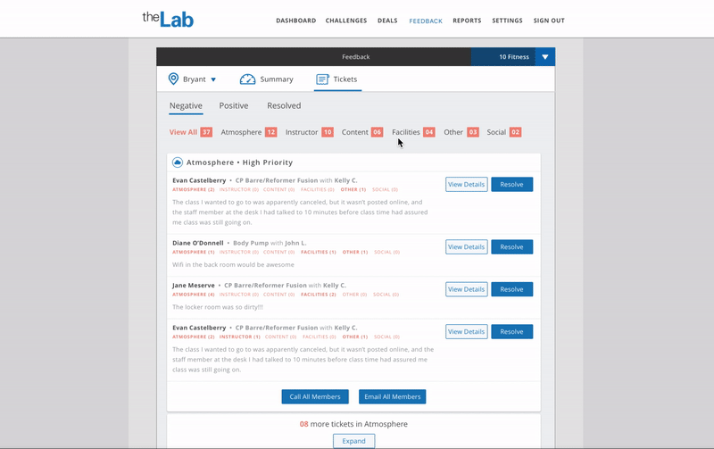

Intro
Who is Netpulse?Netpulse is the #1 mobile SaaS company in the fitness industry, providing white labeled apps to hundreds of brands around the world. From 24 Hour Fitness to your neighborhood's mom-and-pop facility, Netpulse creates effective B2B2C solutions to make the sometimes scary world of fitness a little more approachable for meatheads and newbies alike.

My Role at Netpulse
My Role at Netpulse
As a Lead Product Designer I worked directly with our PMs, engineers, clients, and end users. Because the product team averaged around 5 – 6 team members, I had the opportunity to take the lead on every aspect of multiple projects from discovery to implementation. These projects included both mobile and web solutions.
I also created and documented the (previously non-existent) product design process with our other internal PD. Here are a few of the major initiatives we implemented:
User testingClient research sessions, monthly end-user testing
Critique cadenceDaily PM/PD crits, Weekly PD crits, Weekly Design Team crits, Monthly designer off-sites
App Unification LibraryAlignment within existing app, Craft library for designers, elements for efficient implementation
Better design integration into the engineering sprintsZeplin organization, Design reviews, Design QA, Design task management
- Mobile: members rate their experience in the club after each workout
- Web: tickets appear in real-time on the gym manager’s admin portal
- 4 month pilot with 15 customers

Pilot Takeaways
- Admin can only see a couple tickets at a time
- Lack of context for negative reviews
- Hard to find highest priority tickets
- Timing for ask on user’s side led to complaints in the club
- Club managers don’t have a lot of time to spend here
- Task 1: Make it easier for admin to scan through large quantities of tickets
- Task 2: Better reporting and ticket hierarchy
- Task 3: Automation so managers don’t have to spend as much time to get the benefit
Design Process
Task 1: High Quantity of Tickets
I began by keeping the existing card design but updating them to accommodate the new, more detailed Class feedback. Hierarchy was brought into the ticket sorting, surfacing the negative tickets at the top so the Club Manager can quickly put out any fires.


Tickets were moved into two columns for faster scanning. Negative tickets and positive tickets with testimonials were given more weight so user can focus on resolving highest priority tasks. Issues: side by side tickets required too much cognitive load from users.

Details can be surfaced one ticket at a time, providing more focus when necessary but allowing the user to quickly scroll through the high level.
Task 2: Better Reporting & Hierarchy
The existing hierarchy of information was not great at providing the user with the right amount of information at the right time. I explored surfacing higher level reporting for chain admin who are interested in how their locations are doing but aren't dealing with individual tickets. I also explored various ways to sort the tickets themselves to empower the admin to deal with the most pressing issues quickly and without losing track of any feedback.

A "Summary" tab provides the admin high level information such as how many open tickets there are in each category and how their club is performing compared to the chain average and over time. A separate "Tickets" tab displays highest priority tickets first.

Negative tickets are sorted by category first, then chronologically within. High priority tickets (those with comments) are given priority while those without are collapsed.
Task 3: Automation
The auto post 'web widget' is a new feature we created for the 2.0 MVP launch. While Feedback 1.0 helped club admin appease members before they churned, it didn't provide an adequate way to use testimonials to acquire new members. The web widget takes recent testimonials and outputs them into a lean JavaScript widget that can quickly and easily be added to any website. Timely feedback from actual members is far more powerful than the typical static testimonial section on marketing websites.

The web widget will work with as much or as little effort the admin wants to put in. If they choose the auto post option all they have to do is set the refresh frequency and up to date testimonials will appear on their website.
Final Design
A Focus on Prioritization
I began by keeping the existing card design but updating them to accommodate the new, more detailed Class feedback. Hierarchy was brought into the ticket sorting, surfacing the negative tickets at the top so the Club Manager can quickly put out any fires.

Club Admin responded extremely well to the portal updates in protoype testing. One customer from the 1.0 launch who had cancelled their subscription even resigned their contract for Feedback 2.0.